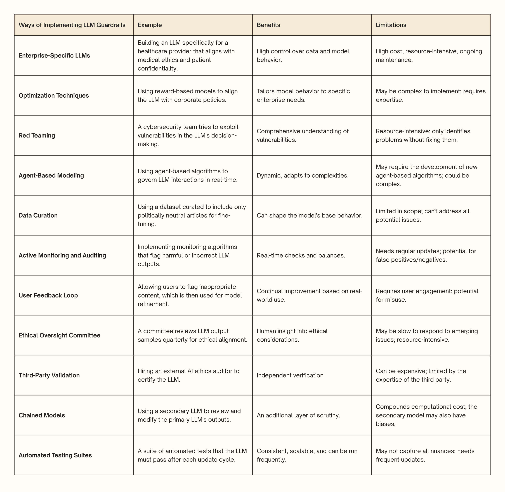
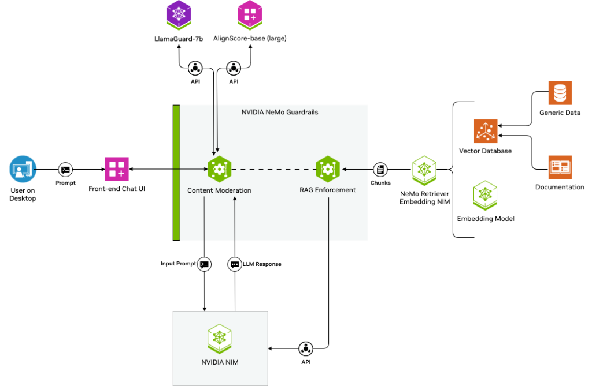

Large Language Models (LLMs), such as OpenAI’s GPT-4 and Google’s PaLM,
have revolutionized the field of artificial intelligence. By leveraging
vast amounts of text data, these models demonstrate remarkable
capabilities, ranging from generating creative content to automating
complex workflows. Their versatility makes them integral to industries
such as healthcare, finance, education, and customer service. However,
as their applications expand, so do the risks associated with their
misuse or malfunction.
The power of LLMs comes with inherent challenges. Uncontrolled or poorly
guided deployments can lead to harmful outcomes such as spreading
misinformation, generating biased content, or exposing sensitive data.
The dynamic nature of LLMs’ outputs also makes them unpredictable,
especially when faced with ambiguous or adversarial inputs. Without
appropriate safeguards, these challenges can undermine trust in AI
systems and hinder their adoption in sensitive domains.
Guardrails serve as a critical mechanism for ensuring that LLMs operate
within acceptable boundaries. These measures can take the form of
technical interventions, governance policies, or ethical frameworks
designed to mitigate risks. By incorporating robust guardrails,
organizations can harness the full potential of LLMs while ensuring
their safe, reliable, and equitable use.
LLMs offer immense potential across diverse applications but also
present significant risks that must be carefully managed to ensure
responsible and effective use. These risks span various dimensions,
including ethical considerations, technical reliability, and societal
impacts. Addressing these challenges requires the implementation of
robust guardrails to mitigate harm and enhance trustworthiness. Below
are some key areas where risks emerge and the measures needed to address
them:
Safety and Ethical Use:
LLMs can generate harmful, offensive, or unethical outputs due to
unintended biases in training data or adversarial inputs. These issues
can result in reputational damage and harm to users. Safety is
paramount in any AI system. Ethical use further emphasizes
transparency, accountability, and the avoidance of practices that
could exploit or deceive users. Guardrails should include content
moderation systems, bias detection mechanisms, and strict adherence to
ethical guidelines to prevent harmful, offensive, or manipulative
outputs.
Accuracy and Reliability:
LLMs are prone to “hallucinations”—instances where they generate
factually incorrect or nonsensical information. This undermines their
reliability, particularly in high-stakes applications like healthcare
or finance. Guardrails should incorporate fact-checking mechanisms,
retrieval-augmented generation, and continuous fine-tuning against
validated datasets to minimize errors and hallucinations. Ensuring
accuracy is particularly crucial in applications like medical
diagnosis or legal advisory.
Robustness to Adversarial Inputs:
LLMs are vulnerable to adversarial attacks, where maliciously crafted
inputs manipulate the model into producing undesired or harmful
outputs. Guardrails should implement input validation, adversarial
training, and monitoring mechanisms to detect and mitigate malicious
prompt manipulations and maintain its intended behavior even under
stress.
Mitigating Bias and Promoting Fairness:
Training data often contain historical or societal biases, leading to
outputs that reinforce stereotypes or marginalize certain groups.
Addressing bias is complex and requires careful intervention.
Guardrails aim to identify and mitigate biases during model
development and deployment, fostering fair and inclusive outputs.
Privacy and Security Risks:
LLMs might inadvertently leak sensitive data present in their training
datasets or fail to adhere to privacy regulations. This poses risks
for user trust and legal compliance. Guardrails should implement
robust data anonymization, encryption, differential privacy
techniques, access controls, and post-processing filters to safeguard
sensitive information and ensure compliance with regulations.
There are various methods to bypass the guardrails implemented in LLMs.
These methods, referred to as “jailbreaks,” exploit vulnerabilities in
LLMs to generate undesirable or harmful content. The jailbreaks are
categorized based on the attacker’s access to the model (white-box,
black-box, and gray-box) and the techniques they use [YiDong]. The categorization of
these techniques based on access and methodology provides a structured
way to understand the vulnerabilities and potential risks associated
with these powerful AI models.
1. White-box Jailbreaks assume the attacker has full access to the
internal details of the model.
Learning-based Methods use optimization methods to generate
adversarial inputs.
Greedy Coordinate Gradient (GCG) searches for a specific sequence
of characters (an adversarial suffix) that, when added to a query,
causes the LLM to generate harmful content. For example, adding a
specific string of characters to a prompt might lead the model to
output toxic language.
Projected Gradient Descent (PGD) improves upon GCG, using
continuous relaxation to control the error introduced by
manipulating the input prompt, allowing it to fool LLMs with similar
attack performance but faster.
AutoDAN-Zhu aims to generate more stealthy jailbreak prompts by
using a double-loop optimization method built upon GCG. It also shows
the ability to solve other tasks like prompt leaking.
COLD-Attack automates the search for adversarial attacks under a
variety of restrictions, such as fluency and stealthiness. It performs
efficient gradient-based sampling in the logit space and uses a guided
decoding process to translate the logit sequences back into text.
PRP (Prefix-based attack) uses a two-step prefix-based approach,
including universal adversarial prefix construction and prefix
propagation, to elicit harmful content from LLMs with guardrails. For
example, inserting a universal prefix into the response can trick the
guardrail into outputting harmful content.
AutoDAN-Liu uses a hierarchical genetic algorithm to generate
stealthy jailbreak prompts that can circumvent the ethical guidelines
of LLMs.
LLM Generation Manipulation directly manipulates the generation
process of open-source LLMs to generate specific tokens, thereby
causing the model to produce undesired responses. For example, it can
force the model to generate private data.
2. Black-box Jailbreaks operate under the assumption that the
attacker lacks knowledge of the LLM’s internal architecture.
Delicately Designed Jailbreaks involve crafting specific prompts
to exploit LLM vulnerabilities.
JailBroken identifies two main reasons for successful attacks:
competing training objectives and instruction tuning objectives, and
uses these failure modes as guiding principles to design new
attacks. For example, using carefully engineered prompts to elicit
harmful content .
DeepInception injects an inception mechanism into the LLM to
“hypnotize” it into acting as a jailbreaker, using nested scenes to
bypass safety constraints. For example, personifying the LLM and
creating nested scenes to generate harmful content.
DAN (Do Anything Now) exploits the ability of LLMs to perform
boundless functions by bypassing the customary rules that govern AI
systems.
ICA (In-Context Attack) constructs malicious contexts to direct
models to produce harmful outputs, leveraging the in-context
learning abilities of LLMs.
SAP (Semi-Automatic Attack Prompt) combines manual and automatic
methods to generate prompts that mislead LLMs into outputting
harmful content. It uses in-context learning with LLMs to update the
prompts.
DRA (Disguise and Reconstruction Attack) conceals harmful
instructions via disguise, prompting the model to uncover and
reconstruct the original instruction.
Exploiting Long-tail Distribution involves converting queries into
rare or unique data formats.
CipherChat encodes malicious text using ciphers to bypass safety
features, and introduces SelfCipher, a hidden cipher embedded within
LLMs to achieve this goal. For example, using encoded prompts to
generate unsafe content .
MultiLingual uses non-English languages to expose the
vulnerabilities of LLMs by using translated prompts to generate
unsafe content.
LRL (Low Resource Languages) uses less commonly used languages
to bypass protective measures and elicit harmful responses.
CodeChameleon encrypts queries into a format that is challenging
for LLMs to detect, then incorporates decryption functions in
instructions so that LLMs can understand the encrypted content. For
example, encrypting a prompt and using code to decrypt and execute
it.
Optimization-based Approaches automate the generation of jailbreak
prompts.
ReNeLLM automates jailbreak prompt generation by using prompt
rewriting and scenario nesting.
PAIR (Prompt Automatic Iterative Refinement) uses a language
model to craft prompt-level attacks by learning from prior prompts
and responses.
GPTFUZZER uses a fuzzing framework to autonomously generate
jailbreak prompts, inspired by AFL fuzzing.
TAP (Tree of Attacks with Pruning) uses an LLM to refine
candidate prompts iteratively using tree-of-thought reasoning.
GA (genetic algorithm) generates a universal adversarial suffix
by using random subset sampling to minimize the cosine similarity
between benign input embedding and adversarial input embedding.
GUARD (Guideline Upholding through Adaptive Role-play
Diagnostics) assigns different roles to user LLMs to generate new
jailbreaks.
Unified Framework for Jailbreaking:
EasyJailbreak evaluates jailbreak attacks on LLMs with
components like Selector, Mutator, Constraint, and Evaluator.
Prompt Injection for Desired Responses:
PROMPTINJECT: Generates iterative adversarial prompts through
masks, focusing on goal hijacking and prompt leaking. For example,
using a “rogue string” to divert the model.
IPI (Indirect Prompt Injection): Uses retrieved prompts as
“arbitrary code” to compromise LLM-integrated applications.
HOUYI: Uses a preconstructed prompt, an injection prompt, and a
malicious question to achieve the adversary’s goals, focusing on
prompt abuse and prompt leak.
Mosaic Prompts: Exploits the ability to query an LLM multiple
times to generate a mosaic of permissible content to circumvent
semantic censorship.
CIA (Compositional Instruction Attack): Capitalizes on LLMs’
failure to detect harmful intents when instructions are composed of
multiple elements.
3. Gray-box Jailbreaks have partial access to the model, such as
some training data.
Fine-tuning Attacks fine-tune the model to remove safeguards.
Fine-tuning can compromise the safety of LLMs by removing RLHF
protections. For example, fine-tuning with a few examples can lead
to harmful responses.
Fine-tuning can amplify the privacy risks by increasing the
likelihood that models will divulge PII upon prompting.
Additional training can compromise the effectiveness of established
guardrails and make the model susceptible to harmful instructions.
Retrieval-Augmented Generation (RAG) Attacks exploit
vulnerabilities in the RAG framework
Poisoning external datasets by injecting malicious instructions can
invalidate safety protection. For example, injecting biased system
messages can bias the responses.
Injecting toxic text into the knowledge database can compromise
LLMs.
Backdoor Attacks manipulate the model to produce specific outputs
when triggered.
Auto Poison: Incorporates training examples that reference the
desired target content into the system, triggering similar behaviors
in downstream models.
LoFT (Local Proxy Fine-tuning): Fine-tunes local proxy models to
develop attacks that are more likely to transfer successfully to
larger LLMs.
BadGPT: Injects a backdoor trigger into the reward model during
fine-tuning.
ICLAttack: Fine-tunes models by targeting in-context learning
for backdoor attacks.
ActivationAttack: Uses activation steering to target
truthfulness, toxicity, bias, and harmfulness.
To mitigate unreliable LLM behaviors, there are four major methods:
better retrieval by RAG, better prompting by prompt engineering, better
models by model finetuning, and better guardrails by AI validation.
Among these methods, better guardrails by AI validation play a
critical role. A guardrail is an additional layer of check or validation
around the input and output of an LLM model. The validity could be
defined as no hallucination, no sensitive information, robustness to
jailbreaking, keeping response on topic, etc.
The implementation of guardrails can be classified into the following
categories or a combination of those based on methodology:
Rule-based filtering and moderation: Relies on predefined rules
and patterns to screen both input and output content in AI systems,
blocking or altering restricted material such as offensive language or
sensitive data.
Classifier-based evaluation and filtering: Utilizes trained
classifiers to identify and exclude unwanted content from the
responses generated by LLMs.
Neural-symbolic systems: Combines neural networks with symbolic
reasoning to enforce controlled outputs through explicit rules, often
applied in content moderation and policy adherence.
Constraint-based programming paradigms: Employs specialized
languages or frameworks to define rules and structures that regulate
model outputs, typically used for maintaining consistent formats and
ensuring policy compliance.
Feedback and evaluation toolkits: Provides a quality assurance
framework for LLMs using auxiliary models and metrics to assess output
quality and safety, along with feedback mechanisms for ongoing
improvement.
Guardrails for LLMs come in various types, each addressing specific
needs to ensure safe, compliant, and relevant AI interactions:
Compliance Guardrails: These mechanisms ensure that an LLM
adheres to applicable laws and regulations, particularly in sensitive
fields like finance or healthcare. By preventing outputs such as
unauthorized recommendations or the disclosure of protected
information, they protect organizations from legal liabilities and
promote adherence to industry standards.
Ethical Guardrails: Designed to uphold fairness and social
responsibility, ethical guardrails prevent the generation of biased,
harmful, or inappropriate language. For instance, in hiring
applications, they help avoid outputs that reinforce stereotypes,
fostering inclusivity and respect in AI-driven environments.
Contextual Guardrails: These are tailored to align the model’s
outputs with specific domains or scenarios. For example, a technical
support chatbot benefits from guardrails that ensure responses are
accurate and relevant to the company’s products, avoiding general or
unrelated information.
Security Guardrails: Focused on safeguarding sensitive data and
preventing vulnerabilities, these measures protect against risks such
as unauthorized access, data breaches, or phishing attempts. They are
vital in maintaining trust and security in environments handling
confidential interactions.
Adaptive Guardrails: Built to evolve with shifting regulations
and standards, adaptive guardrails ensure long-term compliance and
effectiveness. They are particularly useful in dynamic industries
where requirements, such as privacy laws or safety protocols,
frequently change.
In practice, guardrails need to be thoughtfully customized to align with
an organization’s specific objectives, comply with industry-specific
regulations, and address the distinct challenges posed by each LLM
application. Below are critical approaches of implementing guardrails
for LLM applications.

A Summary of Techniques for Implementing Guardrails (Source: attri.ai).
Guardrails are essential mechanisms designed to ensure that LLMs operate
within desired parameters, enhancing their reliability, safety, and
alignment with user expectations. Below are the guardrail frameworks
supporting software packages designed to enhance the safety and
reliability of LLMs (source: Safeguarding Large Language Models: A
Survey). These tools generally function as intermediaries between users
and LLMs, aiming to ensure that the LLMs adhere to ethical and
operational guidelines.
Nvidia NeMo: NVIDIA NeMo is a comprehensive, cloud-native
framework designed to simplify the development, customization, and
deployment of generative AI models. Built for researchers and
enterprises, it supports a wide range of applications, including LLMs,
multimodal systems, automatic speech recognition (ASR), and
text-to-speech (TTS). At its core, NeMo offers modular components
called “Neural Modules,” which serve as building blocks for creating
scalable and domain-specific AI solutions. The platform integrates
state-of-the-art tools for data curation, model training, fine-tuning,
and inference. It leverages NVIDIA’s advanced GPU technologies, such
as Megatron-LM and TensorRT-LLM, to deliver high performance and
efficiency in both training and deployment. NeMo also supports
cutting-edge techniques like retrieval-augmented generation (RAG) for
grounded responses and provides safety features through its Guardrails
toolkit. With pre-trained models, customizable pipelines, and seamless
scalability across cloud, data center, and edge environments, NeMo
empowers developers to create enterprise-grade AI systems tailored to
specific use cases.

Architectural workflow of a RAG chatbot safeguarded by NeMo
Guardrails and integrated with third-party applications (source: NVIDIA Blog)
The official repository for NeMo Guardrails is available on GitHub:
NVIDIA/NeMo-Guardrails.
Llama Guard: Llama Guard [HakanInan], developed by Meta, is a state-of-the-art
content moderation model designed to safeguard human-AI interactions
by classifying inputs and outputs as “safe” or “unsafe.” Built on the
Llama family of LLMs, it incorporates a safety risk taxonomy to
identify and mitigate harmful content, such as violence, hate speech,
sexual material, and criminal planning. Llama Guard excels in both
prompt and response classification, ensuring responsible use of
generative AI systems. The model is highly adaptable, allowing users
to customize safety guidelines and taxonomies for specific regulatory
or organizational needs. It supports multilingual moderation across up
to eight languages and features advanced capabilities like few-shot
and zero-shot learning for new policies. With fine-tuned versions such
as Llama Guard 3, optimized for real-time applications, it provides
robust safeguards against malicious prompts and misuse, including
cybersecurity threats like code interpreter abuse. This makes Llama
Guard a powerful tool for ensuring trust and safety in AI-driven
environments.
Guardrails AI: Guardrails AI is a robust framework designed to
enhance the reliability and safety of LLM applications. Built on the
RAIL (Reliable AI Markup Language) specification, it provides a
structured, language-agnostic approach to enforce rules and corrective
actions for LLM outputs. This framework allows developers to define
the expected structure, data types, and quality benchmarks for
AI-generated content, ensuring outputs are consistent with predefined
criteria. Guardrails AI operates by wrapping around LLM API calls,
validating inputs and outputs against established specifications. It
can detect and mitigate risks such as bias, hallucinations, and
security vulnerabilities in real-time, making it an essential tool for
maintaining ethical and compliant AI operations. The system supports a
wide range of applications across industries like finance and
e-commerce by ensuring that AI outputs adhere to specific guidelines
and regulations. With features like semantic validation, error
correction, and sensitive data leak prevention, Guardrails AI empowers
organizations to deploy AI solutions that are both effective and
secure.
LMQL (Language Model Query Language): LMQL [LucaBeurerKellner] is
an innovative programming language designed to enhance interactions with
LLMs by combining declarative SQL-like constructs with Python scripting.
As a superset of Python, LMQL allows developers to embed constraints
directly into queries, enabling precise control over the structure,
format, and content of model outputs. Its syntax is intuitive yet
powerful, supporting variables, conditions, and logical operators for
complex AI workflows. Key features of LMQL include constraint-guided
decoding, which uses token masking and eager validation to ensure
outputs meet predefined criteria, such as length limits or specific
content requirements. By optimizing interactions with LLMs, LMQL
reduces inference costs and minimizes the number of API calls, making
it particularly valuable for enterprises using pay-to-use APIs. It
supports advanced decoding techniques like beam search and integrates
seamlessly into workflows such as multi-turn dialogue systems and
retrieval-augmented generation (RAG) pipelines. With its focus on
efficiency, flexibility, and safety, LMQL provides a robust framework
for building reliable and cost-effective AI applications.
TruLens: TruLens is an open-source toolkit for developing,
evaluating, and monitoring LLMs. It features TruLens-Eval, which
assesses model outputs against predefined standards, logs inputs and
outputs, and utilizes auxiliary models for comprehensive evaluations.
By integrating retrieval-augmented generation (RAG), TruLens enhances
the accuracy and relevance of outputs. The toolkit visualizes
performance metrics to facilitate iterative refinement of LLM
applications, focusing on continuous improvement rather than merely
constraining inputs and outputs.
Guidance AI: Guidance AI is a programming framework that
integrates text generation, prompts, and logic control within a Python
environment. It employs a Handlebars-like templating syntax, allowing
users to constrain outputs with regex and context-free grammars
(CFGs). This approach provides more effective control over LLMs
compared to traditional prompting methods. Guidance AI supports
various LLMs and utilizes role labels to map tokens or API calls
accurately. Additionally, it features hidden blocks for intermediate
calculations, enabling more complex workflows.
Python Packages: Several Python packages can be used to implement
guardrails around LLMs. These include:
LangChain: Helps streamline the development of LLM applications
and can be used to implement guardrails.
AI Fairness 360 (AIF360): A toolkit from IBM for detecting and
mitigating bias in AI models.
Adversarial Robustness Toolbox (ART): Enhances model security
and robustness against adversarial attacks.
Fairlearn: Reduces unwanted biases in machine learning models.
Detoxify: Identifies and mitigates toxic content in text data.